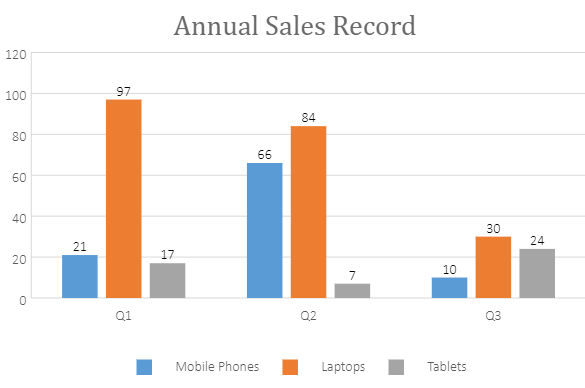
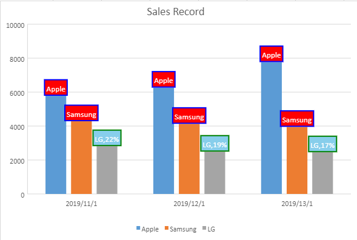

Data Labels identify the details of data points in a data series. They are used to ensure that users can easily understand and interpret the information plotted in a chart.
In SpreadJS, you can get or set the data labels, change their position and color, and control whether to show the data labels in the chart using the dataLabels method and DataLabelPosition enumeration.
A basic image with data label configuration is shown below.

This code shows how to configure data labels in a chart.
| JavaScript |
Copy Code
|
|---|---|
//Configure DataLabels var dataLabels = chart.dataLabels(); dataLabels.showValue = true; dataLabels.showSeriesName = false; dataLabels.showCategoryName = false; dataLabels.color = "#000000"; var dataLabelPosition = GC.Spread.Sheets.Charts.DataLabelPosition; // This position contains many options. Different chart type applies different position values dataLabels.position = dataLabelPosition.outsideEnd; chart.dataLabels(dataLabels); |
|

This code shows how to configure styles of data labels for different chart series.
| JavaScript |
Copy Code
|
|---|---|
// get series 0 & 1 and set it's properties for (var i = 0; i < 2; i++) { var series = chart.series().get(i); series.dataLabels = { showValue: false, showSeriesName: true, showCategoryName: false, showPercentage: false, separator: ",", position: GC.Spread.Sheets.Charts.DataLabelPosition.Center, format: "#,##0;-#,##0", color: "white", backColor: "red", borderColor: "blue", borderWidth: 2 }; chart.series().set(i, series); } // get series 2 and set it's properties var series = chart.series().get(2); series.dataLabels = { showValue: false, showSeriesName: true, showCategoryName: false, showPercentage: true, separator: ",", position: GC.Spread.Sheets.Charts.DataLabelPosition.Center, format: "#,##0;-#,##0", color: "white", backColor: "skyblue", borderColor: "green", borderWidth: 2 }; chart.series().set(2, series); |
|